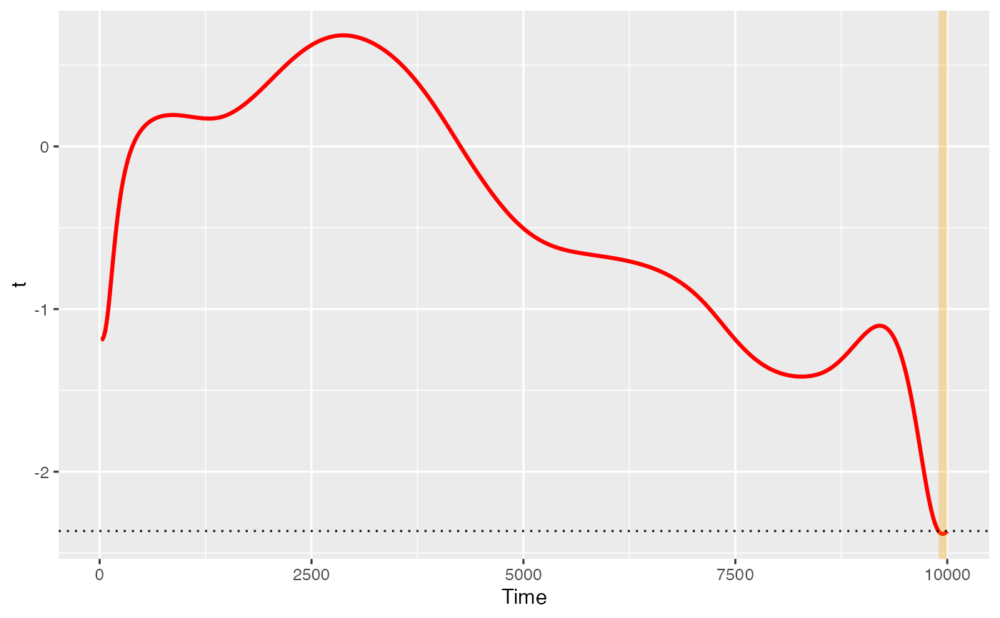

The plot functions are designed to run with just data and pupil selections, with some additional options for fun with plotting. To see these plots, you must first use one of the run_functional tests.
Usage
# S3 method for class 'Pupil_test_data'
plot(x, show_divergence = TRUE, colour = "black", fill = "grey", ...)Examples
Sdata <- make_pupillometryr_data(data = pupil_data,
subject = ID,
trial = Trial,
time = Time,
condition = Type)
regressed_data <- regress_data(data = Sdata, pupil1 = RPupil, pupil2 = LPupil)
mean_data <- calculate_mean_pupil_size(data = regressed_data,
pupil1 = RPupil, pupil2 = LPupil)
base_data <- baseline_data(data = mean_data, pupil = mean_pupil, start = 0, stop = 100)
#> Baselining for each subject and trial. If this is not the intended behaviour you may wish to do this manually.
differences <- create_difference_data(data = base_data,
pupil = mean_pupil)
#> Hard minus Easy -- relevel condition if this is not the intended outcome
spline_data <- create_functional_data(data = differences, pupil = mean_pupil, basis = 10, order = 4)
ft_data <- run_functional_t_test(data = spline_data,
pupil = mean_pupil)
#> critical value for n = 8 is 2.36462425159278
p <- plot(ft_data, show_divergence = TRUE, colour = 'red', fill = 'orange')
p
